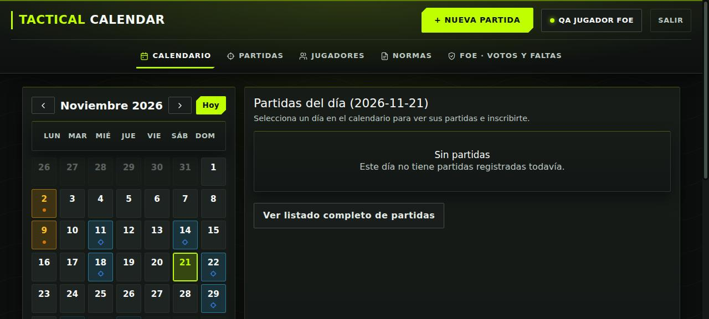
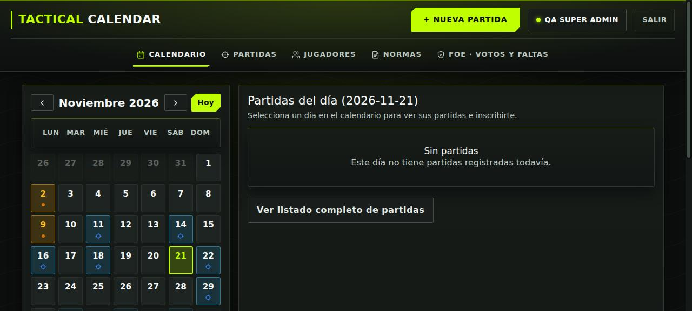
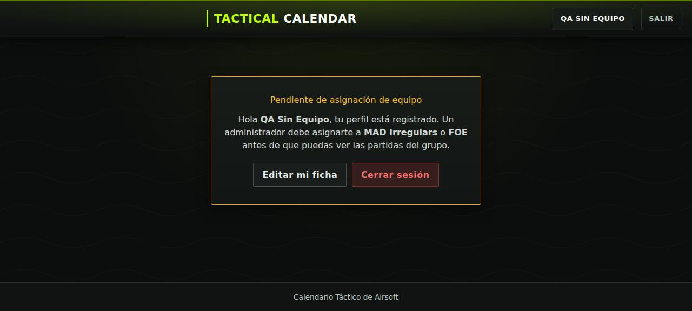

Informe de Selenium Java
Suite j-demo-fallos · tactical-calendar · 22/11/2026, 0:14:08 · 78.1 s
0%Tasa de éxito (0 de 7)
0Pasan
7Fallan
0Omitidos
| Falla | TC-J01 El jugador MAD ve las partidas del equipo FOE (requisito inexistente) QA Jugador MAD Captura Expected condition failed: No se ve By.xpath: //*[contains(normalize-space(.),'QA FOE · Partida próxima')][not(*[contains(normalize-space(.),'QA FOE · Partida próxima')])] |
14.0 s |
| Falla | TC-J02 El jugador FOE ve las partidas del equipo MAD (requisito inexistente) QA Jugador FOE Captura Expected condition failed: No se ve By.xpath: //*[contains(normalize-space(.),'QA MAD · Partida próxima')][not(*[contains(normalize-space(.),'QA MAD · Partida próxima')])] |
12.4 s |
| Falla | TC-J03 El super admin dispone de un panel de métricas QA Super Admin Captura Expected condition failed: No se ve By.xpath: //*[self::h1 or self::h2 or self::h3 or self::h4][normalize-space(.)='Panel de métricas'] |
12.3 s |
| Falla | TC-J04 El jugador sin equipo puede crear partidas QA Sin Equipo Captura Expected condition failed: No se ve By.xpath: //button[normalize-space(.)='Crear partida'] |
12.4 s |
| Falla | TC-J05 El jugador bloqueado sigue viendo el calendario de su equipo QA Bloqueado Captura Expected condition failed: No se ve By.xpath: //*[contains(normalize-space(.),'QA MAD · Partida próxima')][not(*[contains(normalize-space(.),'QA MAD · Partida próxima')])] |
12.3 s |
| Falla | TC-J06 El admin MAD tiene una pestaña de Facturación QA Admin MAD Captura Expected condition failed: No se ve By.xpath: //button[normalize-space(.)='Facturación'] |
12.9 s |
| Falla | TC-J07 El jugador MAD puede exportar el calendario a PDF QA Jugador MAD Captura Expected condition failed: No se ve By.xpath: //button[normalize-space(.)='Exportar calendario (PDF)'] |
12.8 s |